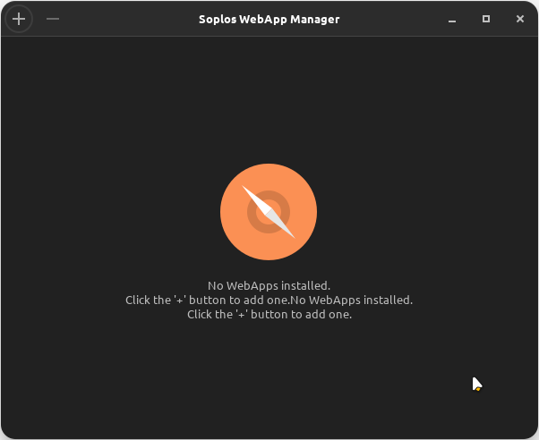
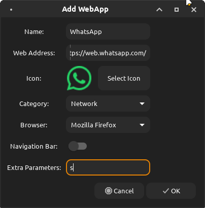
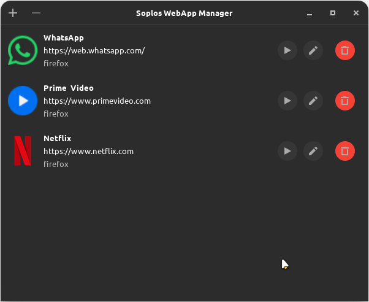

ES
ES FR
FR PT
PT DE
DE IT
IT RO
RO RU
RUOverview
Soplos WebApp Manager provides an easy way to transform web applications into desktop applications using sandboxed browser instances. By keeping your web apps separate from your browser, it brings seamless integration directly into your desktop environment.
Key Features
- Visual Configuration: Graphic interface to organize, add, and manage web applications directly from your desktop.
- Desktop Integration: Websites open in independent windows functioning just like regular desktop software with app menu integration.
- Isolated Profiles: Protects user privacy. Each application runs with a dedicated and completely isolated profile.
- Custom Icons: Download website icons automatically or select custom ones for better menu customization.
Screenshots


